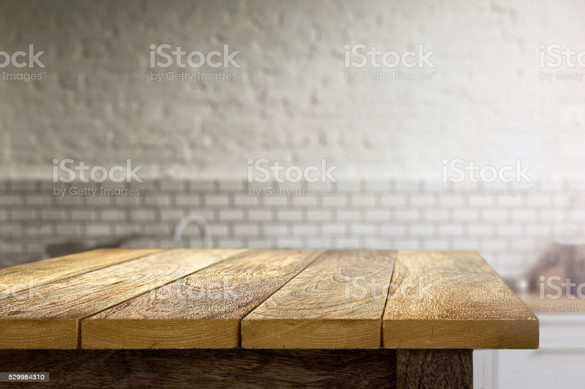
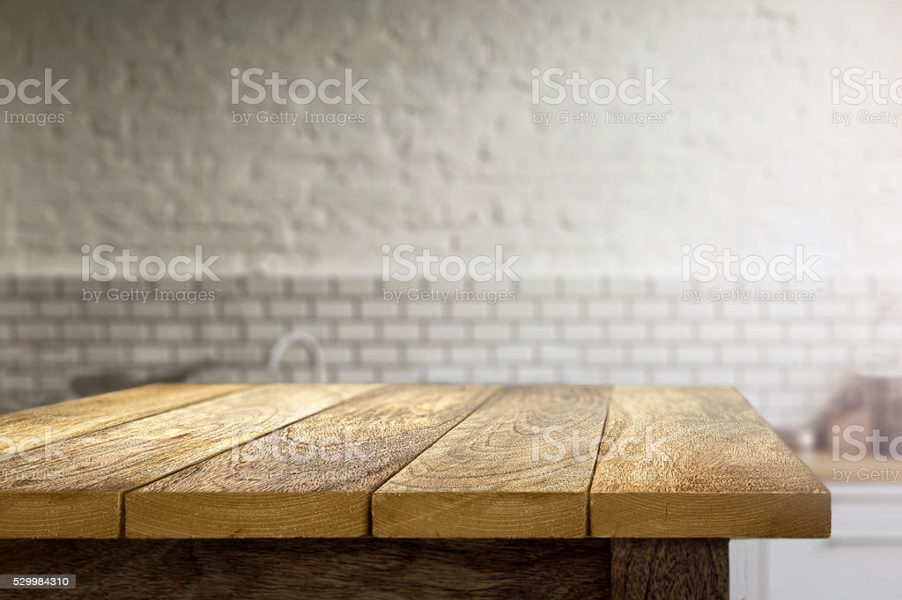
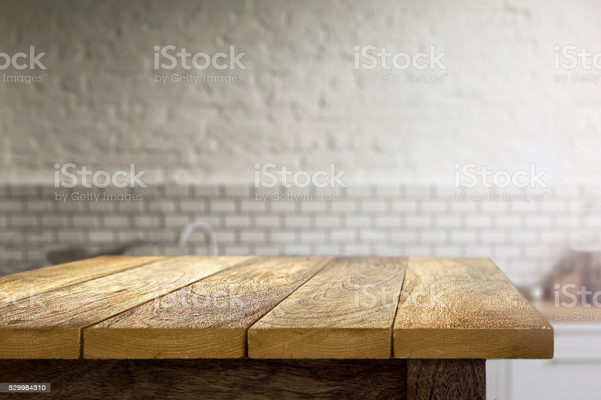
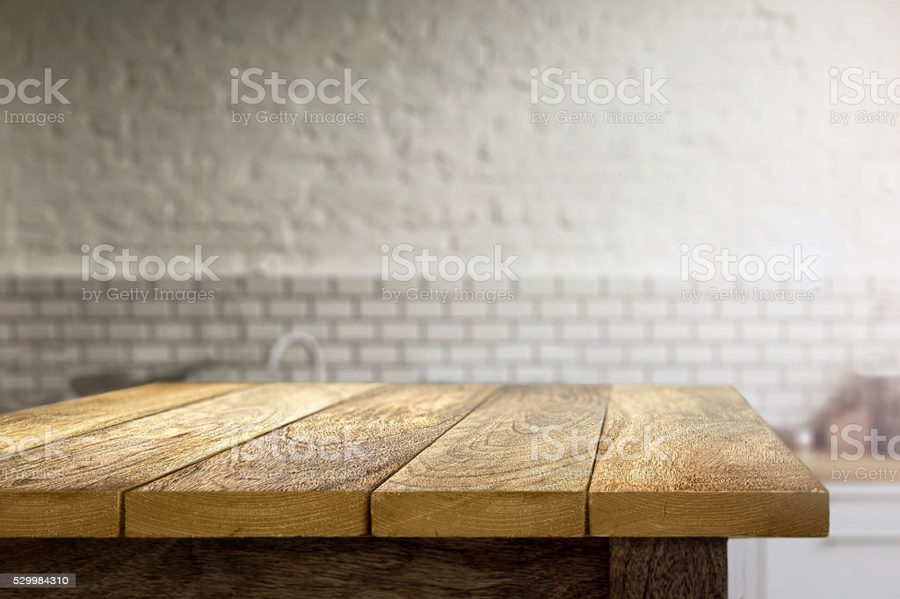

Farm-to-table inspired food & drink have never tasted so good! We're excited to offer an eclectic mix of small & shareable plates, craft & domestic brews, wine, & handcrafted cocktails, in a country-chic & friendly atmosphere. We look forward to seeing you soon!
MON CLOSED
TUE 4 PM - 9 PM
WED 4 PM - 9 PM
THU 4 PM - 9 PM
FRI 4 PM - 9 PM
SAT 4 PM - 9 PM
SUN CLOSED
MON CLOSED
TUE 4 PM - 9 PM
WED 4 PM - 9 PM
THU 4 PM - 9 PM
FRI 4 PM - 9 PM
SAT 4 PM - 9 PM
SUN CLOSED
Our menu is inspired by our roots; both old & new. If you’re looking for delicious, creative, comforting food- you have come to the right place! We have a talented team dedicated to creating outstanding food & drink with an emphasis on local vendors, farmers, & ingredients.

Menus
Our menu is inspired by our roots; both old & new. If you’re looking for delicious, creative, comforting food-
you have come to the right place! We have a talented team dedicated to creating outstanding food &
Menu Picture Demo
This displays an image for your menu items Pulled pork cooked in homemade BBQ sauce. Topped with sweet coleslaw

Pulled Pork Duo - 12
Pulled pork cooked in homemade BBQ sauce. Topped
with sweet coleslaw
Grilled Cheese Duo - 10
Medium cheddar and smoked gouda on Café B
English Muffin bread. Served with tomato bisque.
➺Fries not included
Buffalo Chicken Duo - 10
Roasted chicken cooked in buffalo sauce and topped
with bleu cheese coleslaw